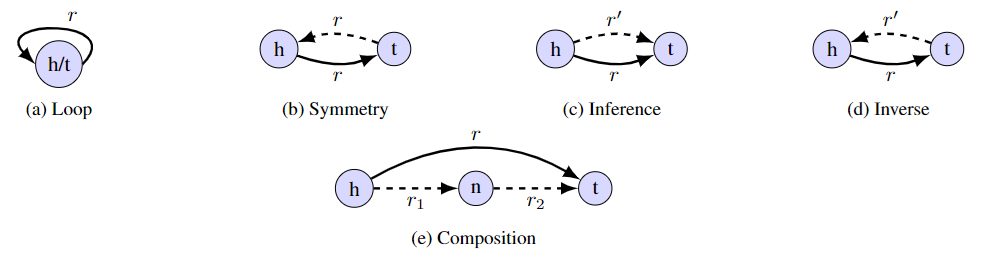

KGTopologyToolbox walk-through
Copyright (c) 2024 Graphcore Ltd. All rights reserved.
In this notebook we give a general overview of the classes and methods included in the kg-topology-toolbox library and explain how to use them to extract topological data from any knowledge graph. As an example, we use the open-source biomedical dataset ogbl-biokg.
Dependencies
[3]:
import sys
!{sys.executable} -m pip uninstall -y kg_topology_toolbox
!pip install -q git+https://github.com/graphcore-research/kg-topology-toolbox.git
!pip install -q jupyter ipywidgets ogb seaborn
Found existing installation: kg-topology-toolbox 0.1.0
Uninstalling kg-topology-toolbox-0.1.0:
Successfully uninstalled kg-topology-toolbox-0.1.0
[4]:
import numpy as np
import pandas as pd
import matplotlib.pyplot as plt
import seaborn as sns
import ogb.linkproppred
from kg_topology_toolbox import KGTopologyToolbox
dataset_directory = "../../../data/ogb-biokg/"
Data preparation
We load the OGBL-BioKG dataset using the ogb.linkproppred.LinkPropPredDataset class and store all (h, r, t) triples in a pandas DataFrame.
[5]:
dataset = ogb.linkproppred.LinkPropPredDataset(
name="ogbl-biokg", root=dataset_directory
)
all_triples = []
for split in dataset.get_edge_split().values():
all_triples.append(np.stack([split["head"], split["relation"], split["tail"]]).T)
biokg_df = pd.DataFrame(np.concatenate(all_triples), columns=["h", "r", "t"])
biokg_df
[5]:
| h | r | t | |
|---|---|---|---|
| 0 | 1718 | 0 | 3207 |
| 1 | 4903 | 0 | 13662 |
| 2 | 5480 | 0 | 15999 |
| 3 | 3148 | 0 | 7247 |
| 4 | 10300 | 0 | 16202 |
| ... | ... | ... | ... |
| 5088429 | 2451 | 50 | 5097 |
| 5088430 | 6456 | 50 | 8833 |
| 5088431 | 9484 | 50 | 15873 |
| 5088432 | 6365 | 50 | 496 |
| 5088433 | 13860 | 50 | 6368 |
5088434 rows × 3 columns
Based on this representation of the knowledge graph, we can proceed to compute its topological properties using the KGTopologyToolbox class.
[6]:
kgtt = KGTopologyToolbox()
Node-level analysis
The method node_degree_summary provides a summary of the degrees of each individual node in the knowledge graph. The returned dataframe is indexed on the node ID.
h_degreeis the number of edges coming out from the node;t_degreeis the number of edges going into the node;tot_degreeis the number of edges that use the node as either head or tail;h_unique_rel(resp.,t_unique_rel) is the number of unique relation types that come out from (resp., go into) the node;n_loopsis the number of loop edges around the node.
[7]:
node_ds = kgtt.node_degree_summary(biokg_df)
node_ds
[7]:
| h_degree | t_degree | tot_degree | h_unique_rel | t_unique_rel | n_loops | |
|---|---|---|---|---|---|---|
| 0 | 27 | 72 | 99 | 4 | 4 | 0 |
| 1 | 14 | 94 | 108 | 3 | 6 | 0 |
| 2 | 208 | 95 | 303 | 5 | 7 | 0 |
| 3 | 28999 | 26154 | 55153 | 10 | 11 | 0 |
| 4 | 362 | 302 | 664 | 11 | 12 | 0 |
| ... | ... | ... | ... | ... | ... | ... |
| 45080 | 21 | 22 | 43 | 1 | 1 | 0 |
| 45081 | 29 | 32 | 61 | 1 | 1 | 0 |
| 45082 | 28 | 30 | 58 | 1 | 1 | 0 |
| 45083 | 17 | 19 | 36 | 1 | 1 | 0 |
| 45084 | 28 | 31 | 59 | 1 | 1 | 0 |
45085 rows × 6 columns
[8]:
metrics = [
"h_degree",
"t_degree",
]
fig, ax = plt.subplots(1, len(metrics), figsize=(4.5 * len(metrics), 4))
for i, metric in enumerate(metrics):
x = np.log2(node_ds[metric])
sns.histplot(
x=x, stat="probability", binwidth=1, binrange=[0, x.max() + 1], ax=ax[i]
)
ax[i].set_xlabel(f"log2({metric})")
plt.tight_layout()
/nethome/albertoc/research/knowledge_graphs/kg-topology-toolbox/.venv/lib/python3.10/site-packages/pandas/core/arraylike.py:399: RuntimeWarning: divide by zero encountered in log2
result = getattr(ufunc, method)(*inputs, **kwargs)
[9]:
metrics = [
"h_unique_rel",
"t_unique_rel",
]
fig, ax = plt.subplots(1, len(metrics), figsize=(4.5 * len(metrics), 4))
for i, metric in enumerate(metrics):
x = node_ds[metric]
sns.histplot(
x=x, stat="probability", binwidth=1, binrange=[0, x.max() + 1], ax=ax[i]
)
ax[i].set_xlabel(f"{metric}")
plt.tight_layout()
Edge-level analysis
Edge degrees and cardinality
The method edge_degree_cardinality_summary provides, for each edge (h, r, t) in the KG, detailed information on the connectivity patterns of the head and tail nodes:
h_unique_rel(resp.t_unique_rel) is the number of unique relation types coming out of the head node (resp. going into the tail node);h_degreeis the out-degree of the head node andh_degree_same_relis the degree when only considering edges of the same relation typer;t_degreeis the in-degree of the tail node andt_degree_same_relis the degree when only considering edges of the same relation typer;tot_degreeis the total number of edges with either head entityhor tail entityt(in particular,tot_degree <= h_degree + t_degree);tot_degree_same_relis computed only considering edges of the same relation typer;triple_cardinalityis the cardinality type of the edge:one-to-one (1:1) if
h_degree = 1,t_degree = 1;one-to-many (1:M) if
h_degree > 1,t_degree = 1;many-to-one (M:1) if
h_degree = 1,t_degree > 1;many-to-many (M:M) if
h_degree > 1,t_degree > 1.
triple_cardinality_same_relis defined astriple_cardinalitybut usingh_degree_same_rel,t_degree_same_rel.
[10]:
edge_dcs = kgtt.edge_degree_cardinality_summary(biokg_df)
edge_dcs
[10]:
| h | r | t | h_unique_rel | h_degree | h_degree_same_rel | t_unique_rel | t_degree | t_degree_same_rel | tot_degree | tot_degree_same_rel | triple_cardinality | triple_cardinality_same_rel | |
|---|---|---|---|---|---|---|---|---|---|---|---|---|---|
| 0 | 1718 | 0 | 3207 | 5 | 191 | 116 | 6 | 46 | 14 | 236 | 129 | M:M | M:M |
| 1 | 4903 | 0 | 13662 | 8 | 544 | 33 | 9 | 1975 | 50 | 2518 | 82 | M:M | M:M |
| 2 | 5480 | 0 | 15999 | 3 | 108 | 5 | 4 | 72 | 22 | 179 | 26 | M:M | M:M |
| 3 | 3148 | 0 | 7247 | 4 | 110 | 99 | 11 | 673 | 271 | 782 | 369 | M:M | M:M |
| 4 | 10300 | 0 | 16202 | 4 | 414 | 315 | 6 | 148 | 31 | 561 | 345 | M:M | M:M |
| ... | ... | ... | ... | ... | ... | ... | ... | ... | ... | ... | ... | ... | ... |
| 5088429 | 2451 | 50 | 5097 | 5 | 636 | 272 | 10 | 803 | 272 | 1437 | 543 | M:M | M:M |
| 5088430 | 6456 | 50 | 8833 | 10 | 743 | 259 | 10 | 371 | 100 | 1111 | 358 | M:M | M:M |
| 5088431 | 9484 | 50 | 15873 | 8 | 652 | 213 | 6 | 486 | 163 | 1135 | 375 | M:M | M:M |
| 5088432 | 6365 | 50 | 496 | 9 | 922 | 277 | 19 | 618 | 173 | 1537 | 449 | M:M | M:M |
| 5088433 | 13860 | 50 | 6368 | 7 | 485 | 175 | 8 | 455 | 147 | 939 | 321 | M:M | M:M |
5088434 rows × 13 columns
The data on the distribution of degrees and cardinalities can be then easily visualized.
[11]:
# Edge frequency when binning by head and tail degree
metrics = [("h_degree", "t_degree"), ("h_degree_same_rel", "t_degree_same_rel")]
fig, ax = plt.subplots(1, len(metrics), figsize=[5 * len(metrics), 4.5])
for i, (group_metric_1, group_metric_2) in enumerate(metrics):
df_empty = pd.DataFrame(
columns=np.int32(2 ** np.arange(15)), index=np.int32(2 ** np.arange(15))
)
df_tmp = edge_dcs[[group_metric_1, group_metric_2]]
df_tmp.insert(
0,
f"log_{group_metric_1}",
np.int32(2 ** np.floor(np.log2(df_tmp[group_metric_1]))),
)
df_tmp.insert(
0,
f"log_{group_metric_2}",
np.int32(2 ** np.floor(np.log2(df_tmp[group_metric_2]))),
)
df_tmp = (
df_tmp.groupby([f"log_{group_metric_1}", f"log_{group_metric_2}"])
.count()
.reset_index()
)
df_tmp[group_metric_1] /= df_tmp[group_metric_1].sum()
sns.heatmap(
df_tmp.reset_index()
.pivot(
columns=f"log_{group_metric_2}",
index=f"log_{group_metric_1}",
values=group_metric_1,
)
.combine_first(df_empty),
annot=False,
vmin=0,
vmax=0.05,
ax=ax[i],
)
ax[i].set_xlabel(group_metric_2)
ax[i].set_ylabel(group_metric_1)
ax[i].invert_yaxis()
fig.suptitle("Edge frequency")
plt.tight_layout()
[12]:
metrics = ["triple_cardinality", "triple_cardinality_same_rel"]
fig, ax = plt.subplots(1, len(metrics), figsize=[4 * len(metrics), 4])
for i, metric in enumerate(metrics):
sns.countplot(
x=edge_dcs[metric],
order=["1:1", "1:M", "M:1", "M:M"],
stat="probability",
ax=ax[i],
)
fig.suptitle("Cardinality distribution")
plt.tight_layout()
Edge topological patterns
The second method provided by KGTopologyToolbox for topological analysis at the edge level is edge_pattern_summary, which extracts information on several significant edge topological patterns. In particular, it detects whether the edge (h,r,t) is a loop, is symmetric or has inverse, inference, composition (directed and undirected):

For inverse/inference, the method also provides the number and types of unique relations r' realizing the counterpart edges; for composition, the number of triangles supported by the edge is provided (the unique metapaths [r_1, r_2] can also be listed by setting return_metapath_list=True when calling the method).
[13]:
edge_eps = kgtt.edge_pattern_summary(biokg_df)
edge_eps
[13]:
| h | r | t | is_loop | is_symmetric | has_inverse | n_inverse_relations | inverse_edge_types | has_inference | n_inference_relations | inference_edge_types | has_composition | has_undirected_composition | n_triangles | n_undirected_triangles | |
|---|---|---|---|---|---|---|---|---|---|---|---|---|---|---|---|
| 0 | 1718 | 0 | 3207 | False | False | False | 0 | [] | False | 0 | [0] | False | True | 0 | 15 |
| 1 | 4903 | 0 | 13662 | False | False | False | 0 | [] | False | 0 | [0] | True | True | 44 | 153 |
| 2 | 5480 | 0 | 15999 | False | False | False | 0 | [] | False | 0 | [0] | False | True | 0 | 1 |
| 3 | 3148 | 0 | 7247 | False | False | False | 0 | [] | False | 0 | [0] | True | True | 10 | 29 |
| 4 | 10300 | 0 | 16202 | False | False | False | 0 | [] | False | 0 | [0] | True | True | 3 | 79 |
| ... | ... | ... | ... | ... | ... | ... | ... | ... | ... | ... | ... | ... | ... | ... | ... |
| 5088429 | 2451 | 50 | 5097 | False | False | True | 1 | [46] | True | 1 | [46, 50] | True | True | 1532 | 5722 |
| 5088430 | 6456 | 50 | 8833 | False | False | True | 2 | [45, 46] | True | 2 | [45, 46, 50] | True | True | 234 | 913 |
| 5088431 | 9484 | 50 | 15873 | False | False | True | 1 | [46] | True | 2 | [46, 45, 50] | True | True | 1326 | 5004 |
| 5088432 | 6365 | 50 | 496 | False | False | True | 2 | [45, 46] | True | 2 | [45, 46, 50] | True | True | 1433 | 5554 |
| 5088433 | 13860 | 50 | 6368 | False | False | False | 0 | [] | False | 0 | [50] | True | True | 119 | 489 |
5088434 rows × 15 columns
[14]:
print("Fraction of triples with property:")
edge_eps[
["is_loop", "is_symmetric", "has_inverse", "has_inference", "has_composition"]
].mean()
Fraction of triples with property:
[14]:
is_loop 0.000011
is_symmetric 0.713743
has_inverse 0.409704
has_inference 0.410111
has_composition 0.997605
dtype: float64
[15]:
metrics = [
"n_inverse_relations",
"n_inference_relations",
"n_triangles",
"n_undirected_triangles",
]
fig, ax = plt.subplots(2, 2, figsize=(9, 7))
for axn, metric in zip(ax.flatten(), metrics):
x = np.sqrt(edge_eps[metric])
sns.histplot(x=x, stat="probability", binwidth=1, binrange=[0, x.max() + 1], ax=axn)
axn.set_xlabel(f"sqrt({metric})")
plt.tight_layout()
Relation-level analysis
The method aggregate_by_relation allows the user to aggregate at the relation-level the statistics outputted by the edge-level methods edge_degree_cardinality_summary and edge_pattern_summary. This converts DataFrames indexed on the KG edges to DataFrames indexed on the IDs of the unique relation types.
[16]:
kgtt.aggregate_by_relation(edge_dcs).head()
[16]:
| num_triples | frac_triples | unique_h | unique_t | h_unique_rel_mean | h_unique_rel_std | h_unique_rel_quartile1 | h_unique_rel_quartile2 | h_unique_rel_quartile3 | h_degree_mean | ... | tot_degree_same_rel_quartile1 | tot_degree_same_rel_quartile2 | tot_degree_same_rel_quartile3 | triple_cardinality_1:M_frac | triple_cardinality_M:1_frac | triple_cardinality_M:M_frac | triple_cardinality_same_rel_1:1_frac | triple_cardinality_same_rel_1:M_frac | triple_cardinality_same_rel_M:1_frac | triple_cardinality_same_rel_M:M_frac | |
|---|---|---|---|---|---|---|---|---|---|---|---|---|---|---|---|---|---|---|---|---|---|
| r | |||||||||||||||||||||
| 0 | 81066 | 0.015931 | 9742 | 9337 | 8.110293 | 8.247277 | 4.0 | 5.0 | 8.0 | 569.252202 | ... | 45.0 | 112.0 | 211.0 | 0.0 | 0.0 | 1.0 | 0.001628 | 0.023586 | 0.064959 | 0.909827 |
| 1 | 5669 | 0.001114 | 698 | 1536 | 27.048157 | 12.936410 | 17.0 | 31.0 | 36.0 | 2518.765391 | ... | 14.0 | 32.0 | 60.0 | 0.0 | 0.0 | 1.0 | 0.002822 | 0.104251 | 0.027518 | 0.865408 |
| 2 | 66954 | 0.013158 | 612 | 612 | 36.404307 | 5.600706 | 33.0 | 36.0 | 41.0 | 4129.511919 | ... | 332.0 | 404.0 | 482.0 | 0.0 | 0.0 | 1.0 | 0.000000 | 0.000254 | 0.000239 | 0.999507 |
| 3 | 19585 | 0.003849 | 491 | 491 | 37.095941 | 5.547389 | 33.0 | 37.0 | 41.0 | 4527.399592 | ... | 114.0 | 157.0 | 202.0 | 0.0 | 0.0 | 1.0 | 0.000000 | 0.000868 | 0.000970 | 0.998162 |
| 4 | 32034 | 0.006295 | 526 | 525 | 37.319567 | 5.384523 | 34.0 | 38.0 | 41.0 | 4511.067834 | ... | 188.0 | 243.0 | 299.0 | 0.0 | 0.0 | 1.0 | 0.000062 | 0.000531 | 0.000593 | 0.998814 |
5 rows × 51 columns
Notice on the left the columns num_triples, frac_triples, unique_h, unique_t giving additional statistics for relation types (number of edges and relative frequency, number of unique entities used as heads/tails by triples of the relation type).
Similarly, by aggregating the edge_eps DataFrame we can look at the distribution of edge topological patterns within each relation type.
[17]:
kgtt.aggregate_by_relation(edge_eps).head()
[17]:
| num_triples | frac_triples | unique_h | unique_t | is_loop_frac | is_symmetric_frac | has_inverse_frac | n_inverse_relations_mean | n_inverse_relations_std | n_inverse_relations_quartile1 | ... | n_triangles_mean | n_triangles_std | n_triangles_quartile1 | n_triangles_quartile2 | n_triangles_quartile3 | n_undirected_triangles_mean | n_undirected_triangles_std | n_undirected_triangles_quartile1 | n_undirected_triangles_quartile2 | n_undirected_triangles_quartile3 | |
|---|---|---|---|---|---|---|---|---|---|---|---|---|---|---|---|---|---|---|---|---|---|
| r | |||||||||||||||||||||
| 0 | 81066 | 0.015931 | 9742 | 9337 | 0.000012 | 0.000222 | 0.009474 | 0.018762 | 0.336120 | 0.0 | ... | 49.615572 | 816.776738 | 3.0 | 7.0 | 16.00 | 136.452841 | 1421.830008 | 18.00 | 36.0 | 68.0 |
| 1 | 5669 | 0.001114 | 698 | 1536 | 0.000000 | 0.000353 | 0.061563 | 0.527783 | 2.502323 | 0.0 | ... | 1630.912154 | 6563.522736 | 13.0 | 84.0 | 234.00 | 2864.104428 | 9520.116812 | 54.00 | 224.0 | 586.0 |
| 2 | 66954 | 0.013158 | 612 | 612 | 0.000000 | 0.947367 | 0.998253 | 11.019118 | 4.707246 | 8.0 | ... | 27666.694925 | 15797.649746 | 14990.0 | 25934.0 | 38868.50 | 32678.993563 | 18619.016056 | 16691.00 | 32647.5 | 48637.0 |
| 3 | 19585 | 0.003849 | 491 | 491 | 0.000000 | 0.947358 | 0.999592 | 13.417258 | 4.585150 | 10.0 | ... | 30250.858974 | 17053.925410 | 16204.0 | 28873.0 | 43798.00 | 32696.125351 | 18685.281686 | 16563.00 | 32808.0 | 48653.0 |
| 4 | 32034 | 0.006295 | 526 | 525 | 0.000000 | 0.947368 | 0.999376 | 13.299588 | 4.427898 | 10.0 | ... | 30942.231192 | 16888.956656 | 17303.0 | 30137.5 | 44161.25 | 32685.210464 | 18685.267154 | 16645.25 | 32580.0 | 48767.0 |
5 rows × 32 columns
Additional methods are provided for the analysis at the relation level: jaccard_similarity_relation_sets to compute the Jaccard similarity of the sets of head/tail entities used by each relation; relational_affinity_ingram to compute the InGram pairwise relation similarity (see paper).
[18]:
kgtt.jaccard_similarity_relation_sets(biokg_df)
[18]:
| r1 | r2 | num_triples_both | frac_triples_both | num_entities_both | num_h_r1 | num_h_r2 | num_t_r1 | num_t_r2 | jaccard_head_head | jaccard_head_tail | jaccard_tail_head | jaccard_tail_tail | jaccard_both | |
|---|---|---|---|---|---|---|---|---|---|---|---|---|---|---|
| 1 | 0 | 1 | 86735 | 0.017046 | 14338 | 9742 | 698 | 9337 | 1536 | 0.064112 | 0.055301 | 0.037317 | 0.079635 | 0.112289 |
| 2 | 0 | 2 | 148020 | 0.029089 | 13934 | 9742 | 612 | 9337 | 612 | 0.056531 | 0.056531 | 0.031947 | 0.031947 | 0.041768 |
| 3 | 0 | 3 | 100651 | 0.019780 | 13929 | 9742 | 491 | 9337 | 491 | 0.045037 | 0.045037 | 0.026530 | 0.026530 | 0.033527 |
| 4 | 0 | 4 | 113100 | 0.022227 | 13931 | 9742 | 526 | 9337 | 525 | 0.048290 | 0.048188 | 0.027610 | 0.027506 | 0.035819 |
| 5 | 0 | 5 | 132276 | 0.025995 | 13931 | 9742 | 576 | 9337 | 578 | 0.053287 | 0.053491 | 0.029815 | 0.029916 | 0.039624 |
| ... | ... | ... | ... | ... | ... | ... | ... | ... | ... | ... | ... | ... | ... | ... |
| 2446 | 47 | 49 | 18021 | 0.003542 | 2414 | 806 | 1885 | 809 | 1886 | 0.131148 | 0.131568 | 0.132409 | 0.132353 | 0.135874 |
| 2447 | 47 | 50 | 374193 | 0.073538 | 5592 | 806 | 5224 | 809 | 5228 | 0.082391 | 0.082526 | 0.083318 | 0.083453 | 0.084764 |
| 2497 | 48 | 49 | 43122 | 0.008475 | 3407 | 2728 | 1885 | 2729 | 1886 | 0.371284 | 0.369952 | 0.371989 | 0.371064 | 0.370707 |
| 2498 | 48 | 50 | 399294 | 0.078471 | 6201 | 2728 | 5224 | 2729 | 5228 | 0.287356 | 0.287379 | 0.286061 | 0.286084 | 0.289147 |
| 2549 | 49 | 50 | 388092 | 0.076269 | 6169 | 1885 | 5224 | 1886 | 5228 | 0.156876 | 0.156773 | 0.156850 | 0.156748 | 0.158373 |
1275 rows × 14 columns
[19]:
kgtt.relational_affinity_ingram(biokg_df)
[19]:
| h_relation | t_relation | edge_weight | |
|---|---|---|---|
| 0 | 0 | 1 | 5.565931 |
| 1 | 0 | 2 | 0.244410 |
| 2 | 0 | 3 | 0.049564 |
| 3 | 0 | 4 | 0.079068 |
| 4 | 0 | 5 | 0.159787 |
| ... | ... | ... | ... |
| 2545 | 50 | 45 | 393.082900 |
| 2546 | 50 | 46 | 421.818843 |
| 2547 | 50 | 47 | 1.194898 |
| 2548 | 50 | 48 | 18.124874 |
| 2549 | 50 | 49 | 5.420267 |
2550 rows × 3 columns